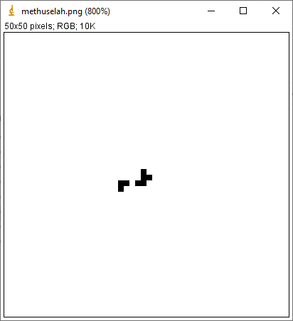

Game of Life in R
12/24/2022 -- the first draft!
https://github.com/moorelr/R_Conway_Life
I've been excited about "Life" ever since I learned about it as an undergraduate student in a geology class, of all places (shoutout to Lynn Fichter). Now, after some time learning about R and a few episodes of vacation down-time (airport layovers, visiting in-laws, etc.) I've finally gotten around to bashing out a personalized R implementation of "Life" for my own tinkering.
In doing this, I've only started to become aware of the large number of people out there obsessed with finding the next large-period oscillator, spaceship, methuselah, infinite growth pattern, prime number generator, or what have you. It goes without saying that I am both WAY too lazy to delve into the venerable literature that John Conway's Game of Life has inspired, and also happily aware that I have reinvented aspects of this wheel.
One of the things I wanted to accomplish here is making a simple system for creating, importing, saving, and recalling game boards. I figured the simplest way to do this would be to just use a basic .png black-on-white image that could be created in MS Paint or, better yet, paint.net. The image above shows a screenshot from ImageJ (which is really good at zooming in on tiny pixellated images) of a methuselah that I drew in MS Paint. I learned about this one from a repository of "Life" patterns on the "Game of Life (xs)" mobile app by Vojtech Stursa. It's also documented here. I selected it because it's pretty easy to remember and doesn't last for too long.

Also, here's an example (above) of an oscillating pattern I found on pentadecathlon.com, which is a useful as a case of a stable (repeating) system that wouldn't show up as just a flat line. Rather than figure out how to parse a ".rle" file like a rational person, I just copied the board manually from another image using paint.net.

(above) Here is a population vs time plot of that methuselah shown above. It took about 2 minutes to run -- oof! This pattern is supposed to run for something like 7000 generations, and I suspect it ended early (flat line) because I drew it on a board size that is too small. I set things up to run on a toroidal (?) board so that the row above the top row is the bottom row, and the column to the right of the rightmost column is the leftmost column , etc.

(above) Here is a random board from the stable state at the end of the session started with the methuselah. Note that this can (untested?) be then used as the starting condition for another session. That would be pointless, but I could also have stopped mid-run and resumed with another frame from the middle of the run.
Well that was fun. In conclusion: it works, i've added some items in my TODO, and I think my next steps will basically be performance testing at different board sizes with minimal addition of features.